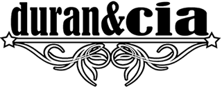
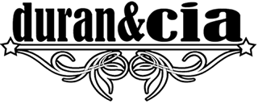

Del pop al rock o al funk-rock, amb pinsellades de rock progressiu

2009. Autoproducció.
- El viejo pescador
- Nadie lo sabe
- Prohibida
- Material de derribo
- Junto al fuego
- El reino de Sadik
- Pasando por el aro
- Sabor añejo
- Hablar por hablar
- Brillante
"Material de derribo" és el primer treball discogràfic de la banda formada al 2004 i va ser publicat al 2009. És una autoproducció total, amb enregistrament en els seus home studios, mescla i masterització pròpies i autoedició d'una tirada curta dexemplars en format CD, apostant també per l'edició digital a Spotify, iTunes i Amazon Music.
L'àlbum consta de 10 temes de composició pròpia.

Malgrat lo artesanal de la producció, el so de l'àlbum és fresc i contundent fruit dels anys d'experiència dels membres del grup tant als escenaris com als estudis de gravació.
L'estil va del pop al rock o al funk-rock, amb pinsellades de rock progressiu o del rock dels 80. Una amalgama d'estils que emulsionen en un rock bàsicament energètic. La presentació del disc es va fer a l'emblemàtica sala Bikini de Barcelona el 6 de novembre de 2009.
 

Disponible a: